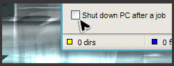

ULTRA DEFRAG
ДОКУМЕНТАЦИЯ
ССЫЛКИ
- ГАЛЕРЕЯ
- БАННЕРЫ
- PERSONAL PAGE OF DMITRI
- PERSONAL BLOG OF JUSTIN
- PERSONAL PAGE OF SAYEM
- PERSONAL PAGE OF STEFAN
- PERSONAL PAGE OF ZSOLT


Термин UltraDefrag это сокращение от Ultra Defragmenter, не имеющее никакой связи с потенциальными владельцами зарегистрированных торговых марок и прочих авторских прав. Все торговые марки, брэнды и названия принадлежат своим владельцам.
системные файлы, включая реестр и файл подкачки. Работает быстро, эффективно и надежно.
Загрузить | Список возможностей | Скриншоты | Форум |
Последние новости - UltraDefrag 5.0.0 beta3
В последней версии программы есть несколько новых интересных вещей, таких как две новые стратегии оптимизации дисков. Быстрая оптимизация перемещает в конец диска только фрагментированные файлы. Затем она придвигает все файлы к началу диска, причем делает это довольно быстро. Полная оптимизация, напротив, освобождает как можно больше места в начале диска, чтобы потом как можно плотнее занять это место файлами. Поэтому эта стратегия работает медленнее, но позволяет в некоторых случаях добиться лучших результатов. Позднее мы планируем добавить еще больше опций, чтобы было легче подобрать наиболее эффективную стратегию оптимизации под каждый конкретный диск.
Новости - готов новый стабильный релиз 4.4.0.
Мы рады представить Вам новый стабильный выпуск нашей программы. Есть несколько полезных усовершенствований, главным образом, в модуле, который работает в процессе загрузки Windows:
- Добавлены команды call, man, type.
- Расширены возможности команд echo, exit, pause, set.
- Реализована история команд. Используйте клавиши со стрелками для навигации.
- Нажмите Escape для прекращения выполнения сценария и перехода в интерактивный режим.
- Команда boot-off теперь работает перед reboot и shutdown.
- Программа сбрасывает флаг неудачной загрузки, поэтому Вы не увидите приглашение восстановления системы при следующей загрузке системы.
Кроме того, немного усовершенствованы алгоритмы дефрагментации и оптимизации дисков.
Change Log содержит полный список изменений.
UltraDefrag это мощная программа для дефрагментации дисков. Первая, среди программ с открытым исходным кодом, которая может обрабатывать файлы, заблокированные системой, такие как файлы реестра и файл подкачки. Программа работает с этими файлами на этапе загрузки Windows, когда они еще не заблокированы.
UltraDefrag это самый маленький и надежный дефрагментатор дисков. Авторы прилагают все усилия к тому, чтобы поддерживать разумный баланс между сложностью и эффективностью алгоритмов.
UltraDefrag прекрасно работает на Windows NT 4.0, Windows 2000, Windows XP, Windows Server 2003, Windows Vista, Windows Server 2008, Windows 7 и на всех 64-битных версиях Windows.
Некоторые интересные возможности UltraDefrag (полный список здесь):
 Дефрагментация во время загрузки Windows:
Дефрагментация во время загрузки Windows:
Эта функция программы позволяет обрабатывать файлы, которые обычно заблокированы системой, например реестр и файл подкачки.
- Выключение компьютера после завершения работы:
Если дефрагментация занимает много времени, включите эту опцию и UltraDefrag выключит ваш компьютер после завершения дефрагментации. Эта опция уменьшает расход электроэнергии и делает ваш компьютер безопаснее.
 Быстрая оптимизация диска:
Быстрая оптимизация диска:
Оптимизатор перемещает все файлы в начало диска. Это уменьшает время доступа к файлам. Алгоритм намеренно очень прост, так как сложные алгоритмы имеют тенденцию занимать очень много времени.
 Дефрагментация отдельного файла или каталога:
Дефрагментация отдельного файла или каталога:
Выберите любой файл или каталог в проводнике Windows и дефрагментируйте его. Эта опция особенно удобна после установки новых игр или софта для ускорения их работы
 Простой графический интерфейс:
Простой графический интерфейс:
UltraDefrag имеет простой графический интерфейс,
не отягощенный
свистоперделками. Шрифт можно настраивать,
общий же стиль окна соответствует выбранной теме Windows.
Переведите UltraDefrag на ваш язык!
|
Если вы владеете языком, на который программа еще не переведена или заметили неточности в уже существующем переводе, добро пожаловать в нашу команду переводчиков! Мы всегда рады вашей поддержке! P.S.: Мы будем весьма признательны тому, кто переведет эту страницу на нормальный, не косноязычный, русский ;-) Сами мы не писатели, а простые программисты, однако. |

ЗАГРУЗИТЬ ULTRADEFRAG

Для 32-битных систем
Windows NT4.0, 2000, XP, Vista, 7 - Server NT4.0, 2000, 2003, 2008

Для 64-битных систем
x64 Издания Windows XP, Vista, 7 - Server 2003, 2008

Для 64-битных систем
на базе процессора
Intel Itanium.